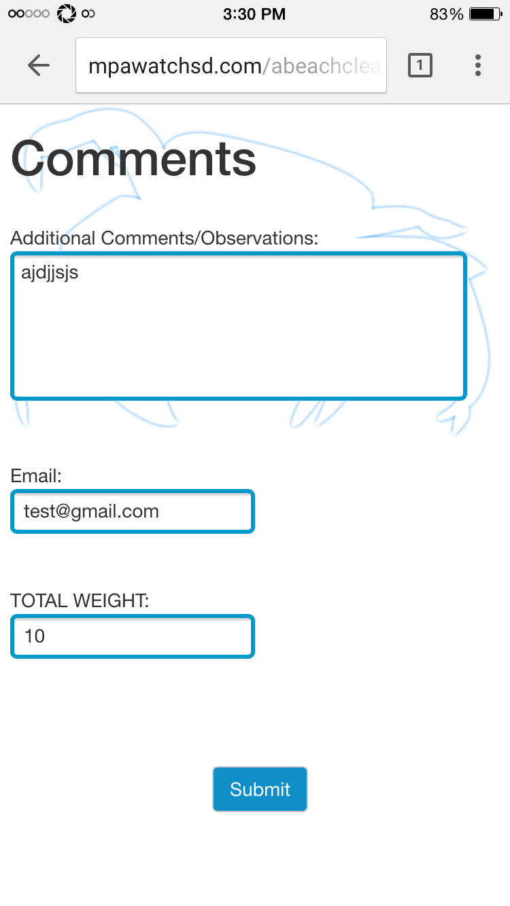

Greeting page where users enter team info during beach cleanup
Main page where users list what they find on the beach
Comments section where users input any additional info and the weight of garbage collected

Finishing page with Facebook share functionalities and summaries
First administrative page to filter beaches and look at specific cleanup information
Summary page for filtered cleanups